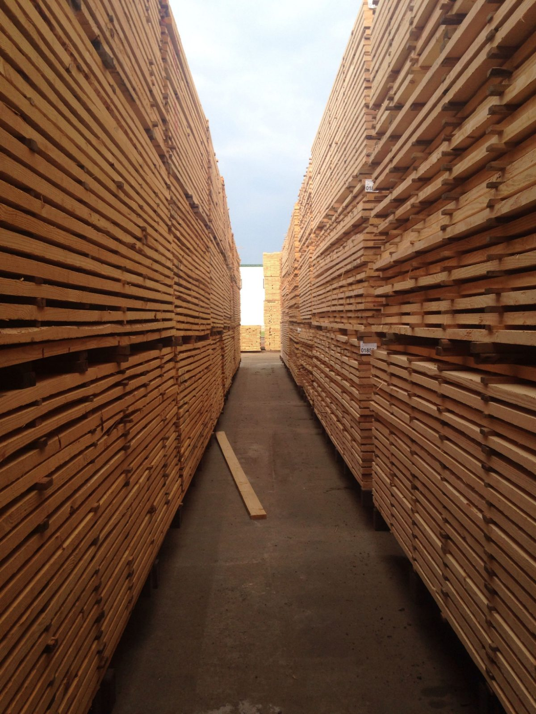

Per cubic metre, by thickness
Measured on the sawn size. Ex VAT; VAT is 20 %. Thicker boards cost more per m³: they take longer to dry.
Kiln or air dried, sawn, £ per m³
| Species | 27 mm | 32 mm | 38 mm | 52 mm | 65 mm | 75 mm |
|---|---|---|---|---|---|---|
| European oak | £2,480 | £2,480 | £2,580 | £2,730 | £2,930 | £3,100 |
| Ash | £1,320 | £1,320 | £1,370 | £1,450 | £1,560 | £1,650 |
| Sweet chestnut | £1,640 | £1,640 | £1,710 | £1,800 | £1,940 | £2,050 |
| Beech | £1,120 | £1,120 | £1,160 | £1,230 | £1,320 | £1,400 |
| Sycamore | £1,380 | £1,380 | £1,440 | £1,520 | £1,630 | £1,730 |
| Wild cherry | £2,290 | £2,290 | £2,380 | £2,520 | £2,700 | £2,860 |
| American black walnut | £3,820 | £3,820 | £3,970 | £4,200 | £4,510 | £4,780 |
| Douglas fir | £920 | £920 | £960 | £1,010 | £1,090 | £1,150 |
| European larch | £840 | £840 | £870 | £920 | £990 | £1,050 |
| Western red cedar | £1,710 | £1,710 | £1,780 | £1,880 | £2,020 | £2,140 |
| Sapele | £1,530 | £1,530 | £1,590 | £1,680 | £1,810 | £1,910 |
| English elm | £1,460 | £1,460 | £1,520 | £1,610 | £1,720 | £1,830 |
How a board is priced
Thickness × width × length on the sawn size gives cubic metres. Multiply by the rate for that species and thickness. A 27 × 150 × 2,400 mm oak board is 0.00972 m³ × £2,480 = £24.11.

- Planed all round
- + £0.85 per linear metre
- Minimum order
- £25 at the counter
- Offcut crate
- £4
- Over £1,500
- 5 % off timber
- Trade account
- 30 days, ask at the counter